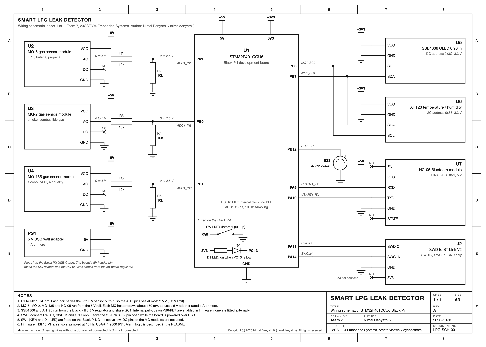

Team 7, 23CSE304 Embedded Systems case study, Amrita Vishwa Vidyapeetham
Nimal Danyath K (CB.SC.U4CSE24033), Ruthwik Narayan P (CB.SC.U4CSE24043), Nikhil Raj L (CB.SC.U4CSE24026)
A domestic LPG alarm has one MQ sensor and one threshold. Steam from a pressure cooker or smoke from a tawa pushes that sensor past the threshold just as well as gas does, the alarm goes off in the middle of dinner, and within a week somebody pulls its plug. We wanted a detector that stays quiet while people cook and still catches a real leak.
The board is an STM32F401CCU6 Black Pill running at 16 MHz from its internal oscillator. Three metal oxide sensors face the same air: an MQ-6 for LPG, an MQ-2 for smoke and an MQ-135 for alcohol vapour. Each module outputs up to 5 V, so a 10k/10k divider halves it before the ADC pin. An AHT20 on the I2C bus gives temperature and humidity, and a 0.96 inch SSD1306 OLED on the same bus shows six pages of status. A buzzer on PB12 and the on-board LED raise the alarm. An HC-05 on USART1 streams one status line per second to a phone, and we wrote a small web page that reads it through Chrome's Web Serial API over Bluetooth, so there is nothing to install. The firmware is C against the CMSIS registers with no HAL, and it builds to about 19 KB at -O1, inside the 32 KB limit of the free Keil licence. The full schematic is on the next page.
After a two minute warm-up the detector reads clean air for ten seconds and stores each sensor's baseline. From then on, every 100 ms, it expresses each reading as Rs/R0, the ratio to that baseline, and computes ten features: the three ratios, the ratios between pairs of sensors, how fast the MQ-6 and MQ-2 readings are changing over three seconds, and how fast humidity is rising. LPG pulls the MQ-6 down much harder than the MQ-135. Smoke reaches the MQ-2 first. Steam moves all three a little and sends the humidity up quickly. A decision tree reads those ten numbers and names the air as clean, LPG, smoke, steam or alcohol. The last ten answers are voted, and the buzzer starts when six of them say LPG. A second rule runs beside the model: if the MQ-6 ratio stays below 0.40 for a full second the alarm sounds whatever the tree says, and the 60 second mute is refused while that rule is active. The alarm clears after five seconds of safe readings.
The tree comes from a Python script that reads logs recorded over Bluetooth. It splits the data by recording run, so the accuracy it reports is on runs it never saw, then writes the tree as C code into model.h. The feature maths in the script and in the firmware match to the bit. Until we have enough recorded runs, model.h holds the hand-written rules described above, and the OLED system page shows MODEL: RULES.
With an incense stick about 20 cm from the sensors, the MQ-2 bar on the sensors page went to 100% while the MQ-6 barely moved. The dashboard stayed on SAFE with the class SMOKE, and the alarm check page showed zero LPG votes. With an unlit lighter held 10 cm away and its gas button pressed for about two seconds, the MQ-6 level climbed, the vote boxes filled, the fail-safe rule tripped and the screen flashed GAS LEAK. Pressing the key during that leak did nothing, as intended. Once we fanned the air the alarm cleared on its own. The phone page showed the same votes and bars live and saved a labelled log for the training script. The steam and alcohol tests, a false alarm rate over repeated trials, and enough recorded runs to replace the rules with a trained tree are still to be done.
Flash about 19 KB, static RAM about 6.7 KB, sampling at 10 Hz, interrupts on SysTick, USART1 and EXTI0.
Code, schematic, training script and phone app: github.com/nimaldanyathk/stm32-lpg-leak-detector | Phone app: nimaldanyathk.github.io/stm32-lpg-leak-detector/phone_app/gas_monitor.html | Demo video: see links.txt
